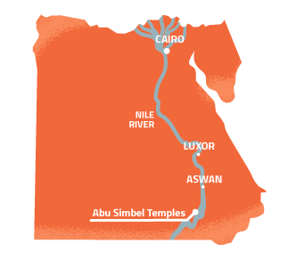
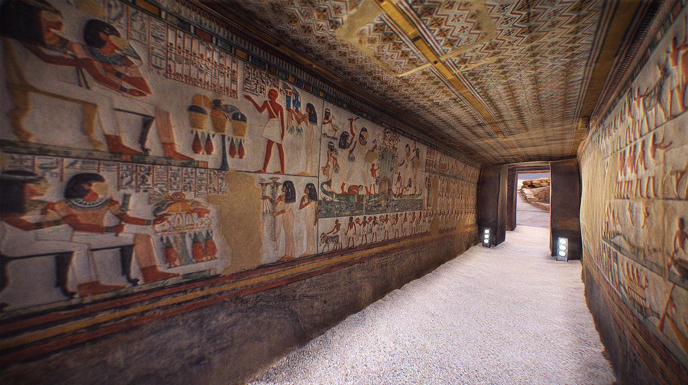
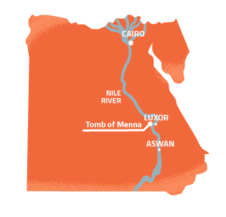
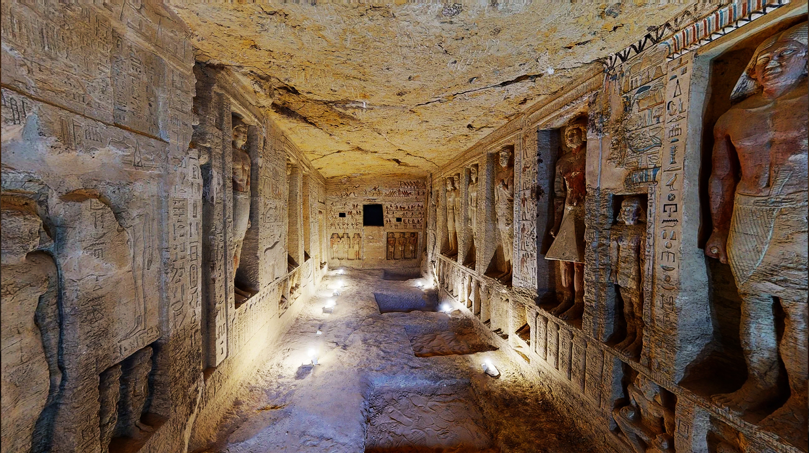
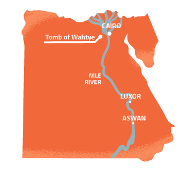
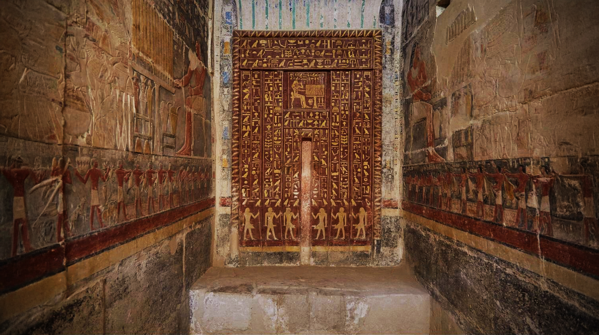
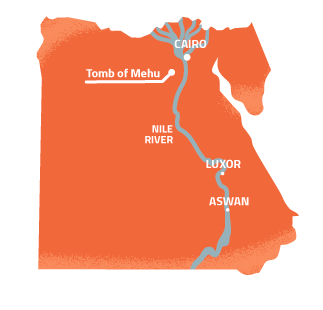
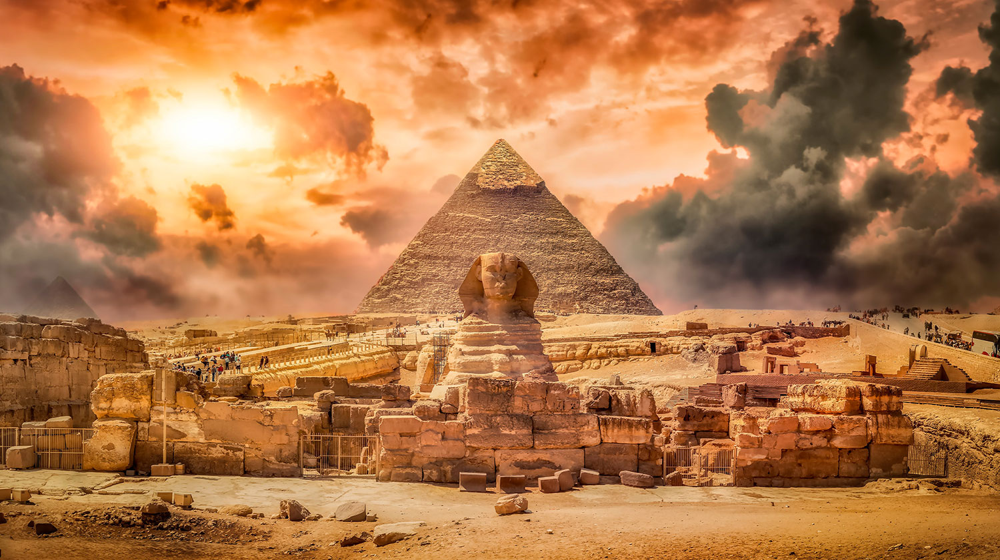
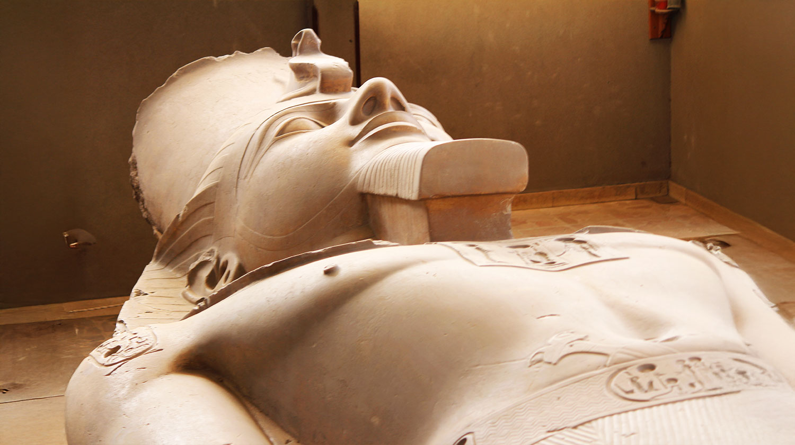

A UNESCO World Heritage Site in southern Egypt, Abu Simbel features two rock-cut temples built by Pharaoh Ramses II (13th century BCE). The main temple, guarded by four 20-meter statues of Ramses II, aligns with the sun to illuminate its inner sanctuary on February 22 and October 22. The smaller temple honors Queen Nefertari and goddess Hathor. Saved from Lake Nasser’s flooding in the 1960s via a UNESCO-led relocation, it showcases ancient engineering and modern preservation, drawing global visitors to its historic grandeur.

Abu Simbel
Abu Simbel Temple: A Monument of Ancient Grandeur and Modern Ingenuity
The Abu Simbel Temples, a UNESCO World Heritage Site in southern Egypt, stand as a testament to the grandeur of ancient Egyptian architecture and the ingenuity of modern preservation. Built during the reign of Pharaoh Ramses II (1279–1213 BCE), the complex consists of two rock-cut temples: the Great Temple, dedicated to Ramses II and the gods Amun, Ra-Horakhty, and Ptah, and the Small Temple, honoring Queen Nefertari and the goddess Hathor.
Construction and Purpose
Ramses II commissioned the temples to showcase Egypt's power and cultural influence in Nubia, a region rich in gold and trade goods. Carved into a mountainside around 1264 BCE, the Great Temple features four colossal 20-meter statues of Ramses II guarding its entrance. The smaller temple, one of the few dedicated to a queen, highlights Nefertari’s significance, with statues of her and Ramses II standing at equal height—a rare honor in Egyptian art.
Rediscovery
Over time, the temples were abandoned and buried under sand. They were rediscovered in 1813 by Swiss explorer Johann Ludwig Burckhardt. Italian explorer Giovanni Belzoni later excavated the site in 1817, revealing its splendor to the world.
Relocation: A Modern Marvel
In the 1960s, the temples faced submersion due to the construction of the Aswan High Dam. A UNESCO-led international effort saved the site by meticulously cutting the temples into massive blocks, relocating them 65 meters higher and 200 meters back from the Nile. This monumental project, completed in 1968, cost $40 million and remains one of history’s greatest feats of engineering.
Architectural Highlights
• Great Temple: The facade features four towering statues of Ramses II. Inside, the temple follows a traditional Egyptian layout, with a hypostyle hall, pillared chambers, and a sanctuary. The temple’s alignment allows sunlight to illuminate the inner sanctum twice a year (February 22 and October 22), lighting statues of Ramses and the gods.
• Small Temple: Dedicated to Hathor and Nefertari, this temple is adorned with statues of the king and queen, symbolizing their equal status. The interior features intricate carvings and Hathor-headed columns.
Cultural Significance
The temples not only celebrate Ramses II’s reign but also reflect ancient Egypt’s religious and artistic achievements. The solar alignment and detailed reliefs, depicting battles and offerings, highlight the Egyptians’ advanced understanding of astronomy and artistry.
Today, Abu Simbel attracts visitors worldwide, offering a glimpse into ancient Egypt’s glory and the remarkable efforts to preserve it for future generations.
3D Model of Temple

Historic site
Menna's
Tomb
The Tomb of Menna (TT69) is located in the Theban Necropolis on the west bank of the Nile near Luxor. It dates to the 18th Dynasty of the New Kingdom (c. 1550–1292 BCE) and belonged to Menna, a scribe and overseer of fields under Thutmose IV or Amenhotep III.

The Tomb of Menna
The Tomb of Menna: A Glimpse into Ancient Egyptian Life
The Tomb of Menna, located in the Theban Necropolis on the west bank of the Nile near Luxor, Egypt, is one of the most well-preserved and richly decorated tombs from the New Kingdom period (circa 1550–1070 BCE). Menna, who lived during the 18th Dynasty under the reign of Pharaoh Thutmose IV, was a high-ranking official who held the title of "Scribe of the Fields of the Lord of the Two Lands." His primary role was to oversee agricultural production and manage the estates of the pharaoh, making him an important figure in the administration of ancient Egypt.
The tomb, designated as TT69 (Theban Tomb 69), is renowned for its vivid and detailed wall paintings that provide a fascinating insight into the daily life, religious beliefs, and artistic traditions of ancient Egypt. These paintings depict a variety of scenes, including agricultural activities, hunting, fishing, and offerings to the gods, as well as intimate family moments. The artwork not only highlights Menna's professional duties but also reflects his personal life, showcasing his wife, Henuttawy, and their children.
Architectural Features
The Tomb of Menna follows a typical design for elite tombs of the New Kingdom. It consists of a transverse hall, a long corridor, and an inner chamber. The transverse hall is the most elaborately decorated section, featuring scenes of Menna and his family in various activities. The corridor leads to the inner chamber, where the burial shaft is located. The walls of the tomb are covered with finely executed paintings that have retained their vibrant colors over millennia, thanks to the dry climate of Egypt and the tomb's relative isolation.
Artistic Significance
The paintings in the Tomb of Menna are celebrated for their artistic quality and attention to detail. The artists employed a combination of naturalistic and symbolic styles, capturing the essence of daily life while adhering to the religious and cultural conventions of the time. For example, agricultural scenes depict farmers plowing fields, harvesting crops, and tending to livestock, offering a glimpse into the economic foundation of ancient Egypt. Similarly, hunting and fishing scenes symbolize Menna's ability to provide for his family and his mastery over the natural world.
Religious themes are also prominent in the tomb's decoration. Scenes of offerings to the gods, including Osiris, Anubis, and Hathor, emphasize Menna's piety and his hope for a successful journey to the afterlife. The depiction of the "Weighing of the Heart" ceremony, a crucial moment in the Egyptian concept of the afterlife, underscores the importance of moral integrity and divine judgment.
Historical and Cultural Insights
The Tomb of Menna serves as a valuable resource for understanding the social and economic structures of ancient Egypt. The detailed representations of agricultural practices, for instance, provide evidence of the tools and techniques used by farmers, as well as the organization of labor. Additionally, the inclusion of Menna's family in the artwork highlights the significance of familial relationships and the role of women in elite households.
The tomb also reflects the religious beliefs of the time, particularly the emphasis on the afterlife and the need for proper burial rituals. The elaborate decorations and inscriptions were intended to ensure Menna's eternal well-being and to secure his place among the gods.
Preservation and Tourism
In recent years, the Tomb of Menna has undergone extensive conservation efforts to protect its fragile paintings from damage caused by environmental factors and human activity. Modern technologies, such as 3D scanning and digital restoration, have been employed to document and preserve the tomb's artwork for future generations.
Today, the Tomb of Menna is a popular destination for tourists and scholars alike. Its well-preserved paintings offer a unique window into the world of ancient Egypt, making it an essential site for anyone interested in the history, art, and culture of this remarkable civilization.
3D Model of the Tomb

Historic site
Wahtye's
Tomb
In November 2018, the tomb of Wahtye was discovered in the Saqqara necropolis. Dating to c. 2415–2405 BC, the tomb is 10 meters long and 3 meters wide. It contains reliefs of Wahtye, his wife Weret Ptah, his four children, and his mother Merit Meen. Wahtye, who stole the tomb from his brother, was buried there with his family, though not all in wooden sarcophagi.

Whhtye Tomb
The Tomb of Wahtye: A Remarkable Discovery from Ancient Egypt
The Tomb of Wahtye, discovered in 2018 in the Saqqara necropolis near Cairo, Egypt, is one of the most significant archaeological finds of the 21st century. Dating back to the Fifth Dynasty of the Old Kingdom (circa 2500–2350 BCE), this tomb belongs to a high-ranking priest named Wahtye, who served under Pharaoh Neferirkare Kakai. The tomb's exceptional preservation, intricate carvings, and vivid wall paintings have provided archaeologists with invaluable insights into the religious practices, daily life, and artistic traditions of ancient Egypt.
Discovery and Significance
The tomb was uncovered by an Egyptian archaeological team led by Dr. Mostafa Waziri, Secretary-General of Egypt's Supreme Council of Antiquities. Its discovery made headlines worldwide due to its remarkable state of preservation and the wealth of artifacts and inscriptions found within. The tomb is a mastaba, a type of rectangular, flat-roofed structure commonly used for elite burials during the Old Kingdom.
Wahtye held the title of "Royal Purification Priest" and was also an overseer of the royal palace, indicating his high status in the court of Pharaoh Neferirkare Kakai. The tomb's elaborate decorations and inscriptions reflect his importance and his close association with the pharaoh.
Architectural Features
The Tomb of Wahtye is a large, rectangular structure with a series of chambers and corridors. The main hall is adorned with intricately carved reliefs and colorful paintings that depict scenes from Wahtye's life, his family, and his religious duties. The tomb features a false door, a common architectural element in ancient Egyptian tombs, which was believed to serve as a portal between the world of the living and the afterlife.
The walls of the tomb are covered with hieroglyphic inscriptions that provide details about Wahtye's titles, family lineage, and offerings made to the gods. These inscriptions are invaluable for understanding the social and religious context of the Fifth Dynasty.
Artistic and Cultural Insights
The tomb's decorations are a masterpiece of Old Kingdom art. The reliefs and paintings depict a variety of scenes, including agricultural activities, hunting, fishing, and religious rituals. These images not only highlight Wahtye's role as a priest but also provide a glimpse into the daily life of ancient Egyptians. For example, scenes of farmers harvesting crops and craftsmen at work illustrate the economic activities that sustained the kingdom.
One of the most striking features of the tomb is the depiction of Wahtye's family. His wife, Weret Ptah, and their children are prominently featured in the artwork, emphasizing the importance of family in ancient Egyptian society. The inclusion of family members in tomb decorations was believed to ensure their participation in the afterlife.
Religious themes are also central to the tomb's decorations. Scenes of offerings to the gods, including Ra, Osiris, and Anubis, reflect Wahtye's devotion and his hope for a successful journey to the afterlife. The tomb also contains depictions of funerary rituals, such as the "Opening of the Mouth" ceremony, which was performed to ensure the deceased's ability to eat, drink, and speak in the afterlife.
Burial Shafts and Artifacts
The tomb contains several burial shafts, some of which were found intact. These shafts contained a variety of artifacts, including statues, pottery, and wooden masks. One of the most notable discoveries was a limestone statue of Wahtye himself, which provides a rare glimpse into the physical appearance of an ancient Egyptian priest.
The artifacts found in the tomb are not only valuable for their artistic quality but also for the information they provide about ancient Egyptian burial practices. For example, the presence of ushabtis (small funerary figurines) suggests that Wahtye believed in the necessity of servants in the afterlife to perform tasks on his behalf.
Preservation and Tourism
Since its discovery, the Tomb of Wahtye has become a focal point for archaeological research and conservation efforts. The tomb's delicate reliefs and paintings require careful preservation to protect them from environmental damage and the effects of tourism. Modern technologies, such as 3D scanning and digital mapping, have been employed to document the tomb's features and ensure its long-term preservation.
The tomb is also a popular destination for tourists, offering a unique opportunity to experience the grandeur of ancient Egyptian art and architecture. Its discovery has reinvigorated interest in the Saqqara necropolis, which is home to numerous other significant tombs and monuments.
3D Model of Temple

Historic site
Mehu's
Tomb
The Tomb of Mehu is an ancient Old Kingdom tomb located in the Saqqara necropolis, dating to the Sixth Dynasty (c. 2340 BCE). Mehu was a high-ranking official, holding titles such as Vizier, Chief Justice, and Overseer of the Royal Scribes.
The tomb is famous for its well-preserved and colorful reliefs, depicting hunting, fishing, farming, and banquet scenes, offering insights into daily life in ancient Egypt. After being closed to the public for nearly 80 years, it was reopened in 2018.

Mehu Tomb
The Tomb of Mehu: A Glimpse into the Life of an Ancient Egyptian Official
The Tomb of Mehu, located in the Saqqara necropolis near Cairo, Egypt, is one of the most fascinating burial sites from the Sixth Dynasty of the Old Kingdom (circa 2345–2181 BCE). This tomb belongs to Mehu, a high-ranking official who held several important titles, including "Vizier" (the highest administrative position in ancient Egypt), "Chief Justice," and "Overseer of the Six Great Courts." Mehu served under Pharaohs Teti and Pepi I, and his tomb reflects his elevated status and the wealth he accumulated during his lifetime.
Discovered in 1940 by Egyptian archaeologist Zaki Saad, the Tomb of Mehu has since been celebrated for its intricate wall reliefs, vivid paintings, and architectural design. It provides valuable insights into the life, duties, and beliefs of an elite official in ancient Egypt.
Architectural Features
The Tomb of Mehu is a large, multi-chambered mastaba, a type of flat-roofed tomb structure commonly used for elite burials during the Old Kingdom. The tomb is divided into several sections, including an offering hall, a burial chamber, and a serdab (a sealed room housing statues of the deceased). The walls of the tomb are adorned with finely carved reliefs and colorful paintings that depict scenes from Mehu's life, his professional duties, and his religious beliefs.
One of the most striking features of the tomb is its false door, a common architectural element in ancient Egyptian tombs. The false door was believed to serve as a portal between the world of the living and the afterlife, allowing the deceased to receive offerings and communicate with the living.
Artistic and Cultural Significance
The Tomb of Mehu is renowned for its exceptional artwork, which showcases the skill and creativity of ancient Egyptian artisans. The reliefs and paintings depict a wide range of scenes, including agricultural activities, hunting, fishing, and religious rituals. These images provide a vivid portrayal of daily life in ancient Egypt and highlight Mehu's role as a high-ranking official.
Scenes of Daily Life
The tomb's decorations include detailed depictions of agricultural activities, such as plowing, sowing, and harvesting crops. These scenes reflect the importance of agriculture in ancient Egyptian society and Mehu's role in overseeing the management of land and resources. Other scenes show craftsmen at work, producing goods such as pottery, jewelry, and furniture, which were essential for both daily life and funerary practices.
Hunting and Fishing
Scenes of hunting and fishing are also prominent in the tomb. These activities were not only practical but also symbolic, representing the deceased's ability to provide for his family and his mastery over the natural world. The depictions of wildlife, including fish, birds, and desert animals, are rendered with remarkable accuracy and attention to detail.
Religious Themes
Religious imagery plays a central role in the tomb's decorations. Scenes of offerings to the gods, including Osiris, Anubis, and Hathor, emphasize Mehu's piety and his hope for a successful journey to the afterlife. The tomb also contains depictions of funerary rituals, such as the "Opening of the Mouth" ceremony, which was performed to ensure the deceased's ability to eat, drink, and speak in the afterlife.
Inscriptions and Titles
The walls of the Tomb of Mehu are covered with hieroglyphic inscriptions that provide valuable information about his life and career. These inscriptions list Mehu's numerous titles, including "Vizier," "Chief Justice," and "Overseer of the Six Great Courts," highlighting his importance in the administration of ancient Egypt. The inscriptions also include prayers and spells intended to protect Mehu and ensure his well-being in the afterlife.
Burial Chamber and Artifacts
The burial chamber of the Tomb of Mehu contains a sarcophagus, which was originally intended to hold his mummified remains. Although the tomb was looted in antiquity, archaeologists have discovered fragments of funerary objects, including pottery, statues, and ushabtis (small funerary figurines). These artifacts provide insights into ancient Egyptian burial practices and beliefs about the afterlife.
Preservation and Tourism
The Tomb of Mehu has undergone extensive conservation efforts to preserve its delicate reliefs and paintings. Modern technologies, such as 3D scanning and digital restoration, have been used to document the tomb's features and ensure its long-term preservation. The tomb is now open to the public, offering visitors a unique opportunity to experience the grandeur of ancient Egyptian art and architecture.
3D Model of Temple

Historic site
Sphinx
Statue
The Great Sphinx , a colossal limestone guardian with the body of a lion and the head of a pharaoh, embodies eternal vigilance and divine wisdom. Carved during the reign of Pharaoh Khafre, it symbolizes the fusion of human intellect and primal strength, watching over Egypt’s golden sands for millennia
The Great Sphinx
In the Voice of the Sphinx
I, the eternal sentinel of the horizon, rise from the sands with the majesty of Ra’s first dawn. My lion’s body, hewn from the bedrock, bears the strength of the desert’s roar, while my visage, carved in the likeness of a king, holds the secrets of stars and stone. I am the riddle and the answer, the watcher who outlives dynasties.
Pharaohs kneeled at my paws, offering hymns to the sun. Empires crumbled, yet I remained—my eyes fixed on the east, awaiting Ra’s rebirth each morning. The winds have scarred my face, and time has stolen my nose, but my silence speaks louder than the clamor of conquest. To stand before me is to stand before Time itself. I am the guardian of thresholds, the bridge between mortal ambition and divine eternity. The desert whispers my name, but only the wise dare unravel my mystery.

Historic site
Ramses III
Statue
This majestic statue depicts Pharaoh Ramses III standing triumphantly between the gods Horus and Seth, symbolizing his divine authority over both order and chaos. Crafted from granite, it embodies his role as the unifier of Egypt and the living incarnation of balance.
Statue of Ramses III with Horus and Seth
In the Voice of Ramses III
I, Usermaatre Meryamun Ramses III, the Guardian of Egypt, stand eternal in stone, flanked by Horus and Seth—the divine twins of duality. Horus, the falcon-eyed lord of the sky, grants me the wisdom to uphold ma’at (order), while Seth, the storm-bringer, lends me the strength to crush rebellion. This statue is not merely my likeness; it is a testament to my reign, where the Two Lands thrived under my spear and scepter
When invaders surged like the Nile’s flood, I shattered them at the gates of Egypt, as I did the Sea Peoples. My temples at Medinet Habu echo with hymns of victory, and here, in this stone, I bind chaos and order as one. To gaze upon me is to witness the pharaoh who wore the Double Crown not as a burden, but as a covenant with the gods.